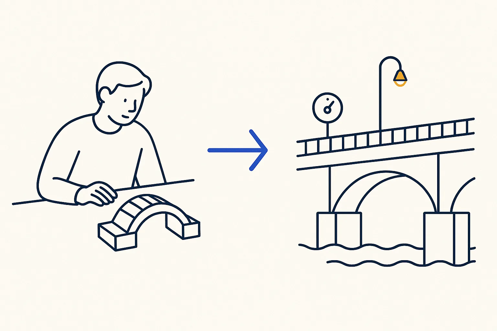

A Proof of Concept Is Not a Product — and That Is the Point
What changes between the first version that runs and the one a business can rely on
By Jaco van der Laan

With AI writing the code, a working proof of concept now takes an afternoon. That is the good news. The bad news is that it looks exactly like a product. Same screen, same numbers, same confidence. The difference only shows up weeks later, on the day it quietly stops being true.
A demo answers one question
A proof of concept answers can this work? It runs once, on data you chose, while you watch. That is all it has to do, and it should be built for exactly that: fast, rough, and thrown away without regret.
A tool you rely on answers a different question: is this still true today? It runs when you are not looking, on data you did not check, for people who assume it is right. Almost everything that separates the two is invisible in a demo.
Three things a demo never shows
1. That it stopped. I kept a local copy of my CRM data for analysis. It answered every question I asked it. It had also stopped updating twenty months earlier; three import scripts existed and none of them had an owner. Nothing failed. Nothing warned. A silent copy looks exactly like a fresh one. The fix was a few lines: the import now fails loudly when the copy is more than seven days old.
2. That it did less than it said. A document import reported success for every batch. Only when I started counting what had actually arrived — with a fingerprint of each file and a confirmation from the system — did it show that a third of the files were duplicates and some had never landed at all. Exit code 0 is a report of the work, not evidence of it.
3. Who it is for. My own cockpit app runs sixteen screens over about 49 small databases and I use it every day. It has no login of its own; it relies on a private network. For one person that is a reasonable choice. For a company it is the first thing to build, before the second screen.
What to add, in order
When a proof of concept earns its place, I add these before any new feature:
- A date on every copy. When was this data last refreshed? Show it on the screen.
- An alarm on that date. Too old means a loud failure, not a stale answer.
- A count against the source. Not "it ran", but "it holds what the source holds".
- Dry run by default. Anything that writes, deletes or sends first shows what it would do.
- An owner. One person, by name, for each import.
- Access. Who may see this, and how do they log in?
None of this is interesting to demo. All of it is what makes the demo still true next quarter.
Keep both, on purpose
I am not arguing against quick prototypes. I build more of them than ever, and most should stay prototypes. The mistake is not building a toy; it is letting a toy drift into a role where people depend on it without anyone deciding that it should.
So decide it out loud. Name it a proof of concept while it is one. When it becomes something the business relies on, give it the date, the alarm, the count and the owner — and only then call it done.
Use cases in this article
- The mirror that went stale and nobody noticed
- Document intake that keeps its own receipts
- One cockpit instead of fifteen apps
Concepts behind it
- A Toy vs an Instrument — Without structure AI is a toy; with structure it becomes an instrument.
- The Demo Agent and the Production Agent — The demo is one prompt, one tool call, one context window. Production is planning, layered memory, guardrails, observability and eval loops — and the gap is not model quality.
- Proof, Not Slides — Ground every claim in real numbers and real systems; never fabricate.
- Silence Is Not Absence of Failure — No complaints does not mean no problems. It usually means people adapted to the errors and stopped mentioning them.
- Uptime Is Not Correctness — Monitoring proves the system ran. Observability for AI has to prove the answer was right — and those are different instruments.